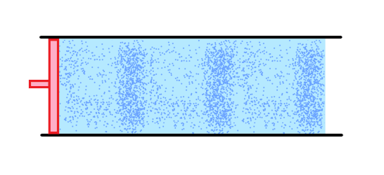
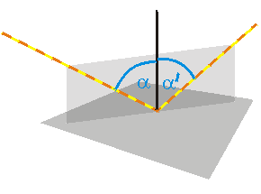
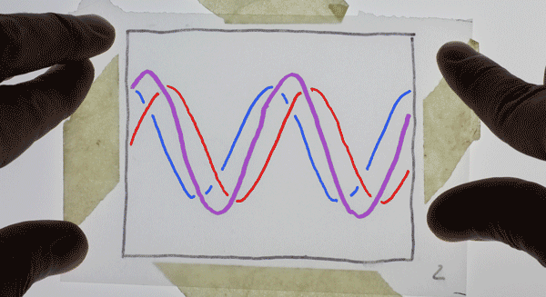

Objetivos
Ao final desta aula, você deverá ser capaz de:
- Definir som como onda mecânica longitudinal.
- Explicar como o som se propaga por compressões e rarefações.
- Relacionar frequência, altura, intensidade, nível sonoro e timbre.
- Descrever noções básicas da fisiologia da audição.
- Diferenciar infrassom, som audível e ultrassom.
- Interpretar reflexão, eco, reverberação e absorção sonora.
- Reconhecer refração, interferência acústica, ondas estacionárias e efeito Doppler em situações acústicas.
- Resolver problemas com \(v=\lambda f\), intensidade, potência sonora, decibéis, interferência acústica, ondas estacionárias em cordas e efeito Doppler.
Introdução
A acústica é a área da Física que estuda o som: sua produção, propagação, recepção e percepção. Ela aparece em salas de aula, auditórios, fones de ouvido, instrumentos musicais, exames de ultrassom, radares sonoros, isolamento acústico e segurança do trabalho.
O som começa com uma fonte vibrante. Essa fonte transfere energia para o meio ao redor, produzindo regiões de compressão e rarefação que se propagam.
Ao estudar acústica, conectamos a descrição física da onda sonora com a experiência humana de ouvir. A frequência está associada à altura, a intensidade está relacionada à sensação de som forte ou fraco, e o timbre permite distinguir fontes diferentes mesmo quando emitem sons de mesma frequência fundamental.
Também é importante separar o fenômeno físico da percepção auditiva. O ouvido transforma variações de pressão em impulsos nervosos, mas a propagação do som depende do meio, da temperatura, da distância até a fonte e das interações com paredes, objetos e aberturas. Por isso, esta aula combina propriedades físicas, fisiologia básica da audição e aplicações como eco, reverberação, interferência acústica, intensidade sonora e efeito Doppler.

Natureza do Som
O som é uma onda mecânica longitudinal.
É mecânica porque precisa de meio material, como ar, água, madeira, concreto ou metal. Não há som no vácuo.
É longitudinal porque as partículas do meio vibram aproximadamente na mesma direção em que a onda se propaga.
No ar, uma fonte sonora comprime e rarefaz sucessivamente as moléculas. Cada molécula oscila em torno de uma posição média; a energia é que se propaga pelo espaço.
Velocidade do Som
A velocidade do som depende do meio e da temperatura.
Valores aproximados:
- ar a \(20\,^\circ\text{C}\): \(343\,\text{m/s}\);
- água: \(1500\,\text{m/s}\);
- aço: cerca de \(5000\,\text{m/s}\).
Em geral, o som se propaga mais rapidamente em sólidos que em líquidos, e mais rapidamente em líquidos que em gases. Em gases, o aumento de temperatura tende a aumentar a velocidade do som.
Para ondas sonoras periódicas:
\[ \boxed{v=\lambda f} \]
Características Físicas e Perceptivas
Altura
A altura está relacionada à frequência.
- Frequência maior: som mais agudo.
- Frequência menor: som mais grave.
Intensidade
A intensidade sonora está relacionada à energia transportada por unidade de área e tempo. Na percepção cotidiana, associamos maior intensidade a som mais forte.
Fisicamente, a intensidade média pode ser calculada por:
\[ I=\frac{P}{A} \]
em que \(I\) é a intensidade sonora, \(P\) é a potência acústica emitida ou transmitida e \(A\) é a área atravessada pela onda. No Sistema Internacional, \(P\) é medida em watt (W), \(A\) em metro quadrado (\(\text{m}^2\)) e \(I\) em \(\text{W/m}^2\).
Quando uma fonte sonora pequena emite som igualmente em todas as direções, a frente de onda pode ser aproximada por uma esfera. Nesse caso, a área aumenta com a distância:
\[ A=4\pi r^2 \]
Logo:
\[ I=\frac{P}{4\pi r^2} \]
Isso mostra que, ao dobrar a distância até uma fonte ideal, a intensidade cai para um quarto do valor inicial. Essa relação ajuda a explicar por que sons ficam muito mais fracos quando nos afastamos da fonte.
O nível sonoro é medido em decibel (dB), uma escala logarítmica. Para o nível de intensidade sonora:
\[ \boxed{\beta=10\log\left(\frac{I}{I_0}\right)} \]
em que \(\beta\) é o nível sonoro em decibel, \(I\) é a intensidade sonora e \(I_0=10^{-12}\,\text{W/m}^2\) é a intensidade de referência, próxima ao limiar de audição humana em \(1000\,\text{Hz}\).
Como a escala é logarítmica, aumentar a intensidade em \(10\) vezes aumenta o nível sonoro em \(10\,\text{dB}\). Aumentar a intensidade em \(100\) vezes aumenta o nível sonoro em \(20\,\text{dB}\).

Timbre
O timbre permite distinguir fontes sonoras diferentes emitindo a mesma nota com a mesma intensidade aproximada. Um violão e uma flauta podem tocar a mesma frequência fundamental, mas produzem harmônicos diferentes.
Duração
A duração é o intervalo de tempo durante o qual o som é percebido.
Faixa Audível
O ouvido humano jovem costuma perceber frequências aproximadamente entre:
\[ 20\,\text{Hz} \le f \le 20\,000\,\text{Hz} \]
- Infrassom
- Frequências abaixo de \(20\,\text{Hz}\).
- Som audível
- Frequências entre cerca de \(20\,\text{Hz}\) e \(20\,000\,\text{Hz}\).
- Ultrassom
- Frequências acima de \(20\,000\,\text{Hz}\).
O ultrassom é usado em exames médicos, limpeza ultrassônica e sensores. O infrassom pode estar associado a fenômenos naturais como terremotos, vulcões e ondas oceânicas.
Fisiologia do Som
A audição envolve transformação de energia mecânica em sinais nervosos.
- O pavilhão auricular ajuda a coletar o som.
- O canal auditivo conduz a onda sonora até o tímpano.
- O tímpano vibra quando recebe variações de pressão.
- Ossículos da orelha média amplificam e transmitem a vibração.
- A cóclea, na orelha interna, contém fluido e células ciliadas sensíveis a frequências.
- As células ciliadas convertem vibrações em impulsos elétricos.
- O nervo auditivo envia os sinais ao cérebro.
Sons muito intensos podem danificar células ciliadas. Esse dano pode ser permanente, por isso a exposição prolongada a fones em volume alto, shows, máquinas e sirenes exige cuidado.
Reflexão, Eco e Reverberação
A reflexão sonora ocorre quando o som encontra uma superfície e retorna ao meio de origem.

- Eco
- O som refletido chega separado do som direto por tempo suficiente para ser percebido como repetição.
- Reverberação
- Muitas reflexões chegam muito próximas no tempo, prolongando o som sem formar repetições separadas.
- Absorção sonora
- Parte da energia sonora é transformada em energia interna no material. Espumas acústicas, cortinas e carpetes podem reduzir reflexões.
Em salas de aula, excesso de reverberação dificulta a compreensão da fala. Em teatros, a acústica busca equilíbrio entre clareza e sustentação sonora.
Refração Sonora
A refração sonora ocorre quando o som passa por regiões em que sua velocidade muda, como camadas de ar com temperaturas diferentes.

A frequência é determinada pela fonte e tende a permanecer constante. Se a velocidade muda, o comprimento de onda também muda.
Em noites frias, por exemplo, variações de temperatura no ar podem curvar a trajetória do som e alterar o alcance de ruídos distantes.
Interferência Acústica
A interferência acústica ocorre quando duas ou mais ondas sonoras chegam ao mesmo ponto ao mesmo tempo. Pelo princípio da superposição, a perturbação resultante é a soma das perturbações produzidas por cada onda.

Em acústica, isso pode produzir regiões onde o som fica mais forte e regiões onde o som fica mais fraco.
- Interferência construtiva
- Ocorre quando as ondas chegam em fase. As compressões coincidem com compressões e as rarefações coincidem com rarefações. A amplitude resultante aumenta.
- Interferência destrutiva
- Ocorre quando as ondas chegam em oposição de fase. Uma compressão pode coincidir com uma rarefação. A amplitude resultante diminui.
Para duas fontes coerentes emitindo sons de mesmo comprimento de onda, a diferença de caminho \(\Delta d\) ajuda a prever o tipo de interferência:
\[ \Delta d=|d_2-d_1| \]
Interferência construtiva:
\[ \Delta d=n\lambda \]
Interferência destrutiva:
\[ \Delta d=\left(n+\frac{1}{2}\right)\lambda \]
em que \(n=0,1,2,\ldots\)
Aplicações aparecem em acústica de salas, posicionamento de caixas de som, cancelamento ativo de ruído e regiões de reforço ou enfraquecimento sonoro em ambientes.
Ondas Estacionárias em Instrumentos
Instrumentos musicais produzem sons por modos de vibração.

Em cordas, aparecem nós e ventres. O comprimento da corda, a tensão e a densidade linear influenciam a velocidade de propagação da onda na corda e, portanto, a frequência emitida.
Para uma corda fixa nas duas extremidades:
\[ f_1=\frac{v}{2L} \]
Para harmônicos:
\[ f_n=n f_1 \]
Efeito Doppler
O efeito Doppler é a mudança da frequência percebida quando existe movimento relativo entre fonte e observador.
Quando a fonte se aproxima, as frentes de onda chegam mais próximas umas das outras. A frequência percebida aumenta e o som fica mais agudo.
Quando a fonte se afasta, as frentes de onda chegam mais espaçadas. A frequência percebida diminui e o som fica mais grave.
Exemplo: a sirene de uma ambulância parece mais aguda ao se aproximar e mais grave depois que passa.
Para som no ar, a frequência percebida pode ser calculada por:
\[ \boxed{f'=f\left(\frac{v\pm v_o}{v\mp v_s}\right)} \]
em que \(f'\) é a frequência percebida, \(f\) é a frequência emitida, \(v\) é a velocidade do som, \(v_o\) é a velocidade do observador e \(v_s\) é a velocidade da fonte.
Convenção prática:
- observador aproximando-se da fonte: usar \(v+v_o\) no numerador;
- observador afastando-se da fonte: usar \(v-v_o\) no numerador;
- fonte aproximando-se do observador: usar \(v-v_s\) no denominador;
- fonte afastando-se do observador: usar \(v+v_s\) no denominador.
Se o observador está parado e a fonte se move:
\[ f'_\text{aproxima}=\frac{fv}{v-v_s} \]
\[ f'_\text{afasta}=\frac{fv}{v+v_s} \]
Exemplos Resolvidos
Exemplo 4.1 - Comprimento de Onda
Um som de \(440\,\text{Hz}\) se propaga no ar com velocidade \(340\,\text{m/s}\). Determine o comprimento de onda.
\[ \lambda=\frac{v}{f}=\frac{340}{440}\approx0{,}77\,\text{m} \]
Resposta: \(\lambda\approx0{,}77\,\text{m}\).
Exemplo 4.2 - Interferência Construtiva
Duas caixas de som coerentes emitem ondas sonoras de comprimento de onda \(\lambda=0{,}80\,\text{m}\). Em certo ponto da sala, as distâncias até as caixas são \(d_1=3{,}20\,\text{m}\) e \(d_2=4{,}00\,\text{m}\). Verifique se ocorre interferência construtiva.
\[ \Delta d=|d_2-d_1|=|4{,}00-3{,}20|=0{,}80\,\text{m} \]
Como:
\[ \Delta d=0{,}80\,\text{m}=\lambda \]
temos \(\Delta d=1\lambda\), portanto ocorre interferência construtiva.
Resposta: sim, ocorre reforço sonoro nesse ponto.
Exemplo 4.3 - Eco
Uma pessoa grita diante de uma parede a \(170\,\text{m}\) de distância. Considere \(v=340\,\text{m/s}\). Quanto tempo o som leva para voltar?
O som vai até a parede e retorna:
\[ \Delta s=2\cdot170=340\,\text{m} \]
\[ \Delta t=\frac{\Delta s}{v}=\frac{340}{340}=1\,\text{s} \]
Resposta: o eco retorna após \(1\,\text{s}\).
Exemplo 4.4 - Intensidade de Fonte Esférica
Uma fonte sonora emite potência acústica \(P=12\,\text{W}\) igualmente em todas as direções. Desprezando perdas no ar, calcule a intensidade a \(r=1\,\text{m}\) da fonte. Use \(\pi\approx3\).
\[ A=4\pi r^2=4\cdot3\cdot1^2=12\,\text{m}^2 \]
\[ I=\frac{P}{A}=\frac{12}{12}=1\,\text{W/m}^2 \]
Resposta: \(1\,\text{W/m}^2\).
Exemplo 4.5 - Potência a Partir da Intensidade
Uma onda sonora atravessa uma área de \(8\,\text{m}^2\) com intensidade média \(I=0{,}50\,\text{W/m}^2\). Determine a potência sonora transmitida por essa área.
\[ I=\frac{P}{A} \]
\[ P=IA=0{,}50\cdot8=4\,\text{W} \]
Resposta: \(4\,\text{W}\).
Exemplo 4.6 - Nível Sonoro em Decibéis
Um som tem intensidade \(I=10^{-8}\,\text{W/m}^2\). Calcule o nível sonoro. Use \(I_0=10^{-12}\,\text{W/m}^2\).
\[ \beta=10\log\left(\frac{I}{I_0}\right) \]
\[ \beta=10\log\left(\frac{10^{-8}}{10^{-12}}\right) =10\log(10^4) =10\cdot4 =40\,\text{dB} \]
Resposta: \(40\,\text{dB}\).
Exemplo 4.7 - Intensidade a Partir do Decibel
Um som apresenta nível sonoro \(\beta=70\,\text{dB}\). Determine sua intensidade. Use \(I_0=10^{-12}\,\text{W/m}^2\).
\[ 70=10\log\left(\frac{I}{10^{-12}}\right) \]
\[ 7=\log\left(\frac{I}{10^{-12}}\right) \]
\[ \frac{I}{10^{-12}}=10^7 \]
\[ I=10^7\cdot10^{-12}=10^{-5}\,\text{W/m}^2 \]
Resposta: \(10^{-5}\,\text{W/m}^2\).
Exemplo 4.8 - Doppler com Fonte Aproximando-se
Uma ambulância emite sirene de \(700\,\text{Hz}\) e se aproxima de um observador parado com velocidade \(v_s=20\,\text{m/s}\). Considere \(v=340\,\text{m/s}\). Determine a frequência percebida.
\[ f'=\frac{fv}{v-v_s} \]
\[ f'=\frac{700\cdot340}{340-20} =\frac{238000}{320} \approx744\,\text{Hz} \]
Resposta: aproximadamente \(744\,\text{Hz}\), som mais agudo.
Exemplo 4.9 - Doppler com Fonte Afastando-se
A mesma ambulância emite \(700\,\text{Hz}\), mas agora se afasta do observador parado com \(v_s=20\,\text{m/s}\). Considere \(v=340\,\text{m/s}\).
\[ f'=\frac{fv}{v+v_s} \]
\[ f'=\frac{700\cdot340}{340+20} =\frac{238000}{360} \approx661\,\text{Hz} \]
Resposta: aproximadamente \(661\,\text{Hz}\), som mais grave.
Exemplo 4.10 - Onda Estacionária em Corda
Uma corda fixa nas duas extremidades tem comprimento \(L=0{,}80\,\text{m}\). A velocidade da onda na corda é \(v=320\,\text{m/s}\). Determine a frequência fundamental.
\[ f_1=\frac{v}{2L} \]
\[ f_1=\frac{320}{2\cdot0{,}80} =\frac{320}{1{,}60} =200\,\text{Hz} \]
Resposta: \(200\,\text{Hz}\).
Exemplo 4.11 - Interferência Destrutiva
Dois alto-falantes coerentes emitem som de comprimento de onda \(\lambda=0{,}60\,\text{m}\). Em um ponto, a diferença de caminho é \(\Delta d=0{,}30\,\text{m}\). Determine o tipo de interferência.
\[ \Delta d=0{,}30\,\text{m}=\frac{0{,}60}{2} \]
\[ \Delta d=\frac{\lambda}{2} \]
Como a diferença de caminho é meio comprimento de onda, as ondas chegam em oposição de fase.
Resposta: interferência destrutiva.
Exemplo 4.12 - Doppler Qualitativo
Uma motocicleta com escapamento ruidoso se aproxima e depois se afasta de um observador parado. Como a altura percebida muda?
Resolução: na aproximação, a frequência percebida aumenta; no afastamento, diminui.
Resposta: som mais agudo na aproximação e mais grave no afastamento.
Erros Comuns
- Confundir altura com intensidade.
- Dizer que som se propaga no vácuo.
- Usar decibel como escala linear.
- Pensar que timbre depende apenas do volume.
- Confundir eco com reverberação.
- Confundir interferência construtiva com destrutiva.
- Dizer que Doppler muda a frequência emitida pela fonte; ele muda a frequência percebida.
Exercícios de Fixação
- 4.1)
- Um som de \(500\,\text{Hz}\) se propaga no ar com \(v=340\,\text{m/s}\). Seu comprimento de onda é:
- \(0{,}68\,\text{m}\).
- \(1{,}47\,\text{m}\).
- \(170\,\text{m}\).
- \(840\,\text{m}\).
- \(500\,\text{m}\).
- 4.2)
- Dois sons têm frequências \(200\,\text{Hz}\) e \(800\,\text{Hz}\). O som de \(800\,\text{Hz}\) é percebido como:
- mais intenso obrigatoriamente.
- mais agudo.
- mais lento no mesmo ar.
- sem timbre.
- infrassom.
- 4.3)
- Duas fontes coerentes emitem som de comprimento de onda \(\lambda=0{,}50\,\text{m}\). Em certo ponto, a diferença de caminho é \(\Delta d=0{,}25\,\text{m}\). Nesse ponto ocorre:
- interferência construtiva, pois \(\Delta d=\lambda\).
- eco, pois \(\Delta d=2\lambda\).
- interferência destrutiva, pois \(\Delta d=\lambda/2\).
- refração, pois a frequência mudou.
- efeito Doppler, pois a fonte está parada.
- 4.4)
- Uma frequência de \(25\,000\,\text{Hz}\) está:
- abaixo da faixa audível e é infrassom.
- no limite inferior da audição.
- sempre associada a eco.
- acima da faixa audível e é ultrassom.
- sem relação com som.
- 4.5)
- Uma fonte sonora emite potência \(P=20\,\text{W}\) através de uma área de \(5\,\text{m}^2\). A intensidade sonora média nessa área é:
- \(100\,\text{W/m}^2\).
- \(25\,\text{W/m}^2\).
- \(15\,\text{W/m}^2\).
- \(0{,}25\,\text{W/m}^2\).
- \(4\,\text{W/m}^2\).
- 4.6)
- Um som tem intensidade \(I=10^{-6}\,\text{W/m}^2\). Usando \(I_0=10^{-12}\,\text{W/m}^2\), o nível sonoro é:
- \(60\,\text{dB}\).
- \(6\,\text{dB}\).
- \(12\,\text{dB}\).
- \(30\,\text{dB}\).
- \(120\,\text{dB}\).
- 4.7)
- Um som de \(50\,\text{dB}\) tem intensidade:
- \(10^{-8}\,\text{W/m}^2\).
- \(10^{-7}\,\text{W/m}^2\).
- \(10^{-9}\,\text{W/m}^2\).
- \(10^{-10}\,\text{W/m}^2\).
- \(5\cdot10^{-12}\,\text{W/m}^2\).
- 4.8)
- Uma corda fixa nas duas extremidades tem \(L=1{,}0\,\text{m}\) e a velocidade da onda na corda é \(v=200\,\text{m/s}\). A frequência fundamental é:
- \(50\,\text{Hz}\).
- \(80\,\text{Hz}\).
- \(100\,\text{Hz}\).
- \(200\,\text{Hz}\).
- \(400\,\text{Hz}\).
- 4.9)
- Uma sirene emite \(600\,\text{Hz}\) e se aproxima de um observador parado com \(v_s=20\,\text{m/s}\). Considere \(v=340\,\text{m/s}\). A frequência percebida é aproximadamente:
- \(565\,\text{Hz}\).
- \(600\,\text{Hz}\).
- \(620\,\text{Hz}\).
- \(638\,\text{Hz}\).
- \(720\,\text{Hz}\).
- 4.10)
- Uma sirene emite \(600\,\text{Hz}\) e se afasta de um observador parado com \(v_s=20\,\text{m/s}\). Considere \(v=340\,\text{m/s}\). A frequência percebida é aproximadamente:
- \(565\,\text{Hz}\).
- \(600\,\text{Hz}\).
- \(638\,\text{Hz}\).
- \(680\,\text{Hz}\).
- \(567\,\text{Hz}\).
Recomendações


Referências
- BONJORNO, José Roberto; RAMOS, Clinton; BONJORNO, Regina. Física: termologia, óptica e ondas. São Paulo: FTD.
- HEWITT, Paul G. Física Conceitual. Porto Alegre: Bookman.
- HALLIDAY, David; RESNICK, Robert; WALKER, Jearl. Fundamentos de Física. Rio de Janeiro: LTC.
- Wikimedia Commons. Sound waves. Disponível em: https://commons.wikimedia.org/wiki/Category:Sound_waves.
- Wikimedia Commons. Dopplerfrequenz.gif. Disponível em: https://commons.wikimedia.org/wiki/File:Dopplerfrequenz.gif.
- Wikimedia Commons. Waves interferences.gif. Disponível em: https://commons.wikimedia.org/wiki/File:Waves_interferences.gif.
- Wikimedia Commons. Standing wave.gif. Disponível em: https://commons.wikimedia.org/wiki/File:Standing_wave.gif.
- BRASIL ESCOLA. Ondas sonoras. Disponível em: https://youtu.be/kR5FSlOPrhI. Acesso em: 21 jul. 2026.
- BRASIL ESCOLA. Nível de intensidade sonora. Disponível em: https://youtu.be/hwpluwl5vsI. Acesso em: 21 jul. 2026.
- YOUTUBE. Física - Qualidades fisiológicas do som. Disponível em: https://youtu.be/rUMDXXsFvPU. Acesso em: 21 jul. 2026.
- TELECURSO. Cancelando ruídos - Física - Ensino Médio. Disponível em: https://telecurso.frm.org.br/conteudo/educacao-basica/video/cancelando-ruidos-fisica-ensino-medio. Acesso em: 30 jul. 2026.
- KHAN ACADEMY. Introdução ao efeito Doppler. Disponível em: https://pt.khanacademy.org/science/fisica-ensino-medio/x6443ccf4d35f6b36:som/x6443ccf4d35f6b36:efeito-doppler/v/introduction-to-the-doppler-effect. Acesso em: 30 jul. 2026.
- BRASIL ESCOLA. Videoaula sobre Efeito Doppler. Disponível em: https://brasilescola.uol.com.br/videos/efeito-doppler.htm. Acesso em: 30 jul. 2026.
{kind=link}
{kind=link}
{kind=link}